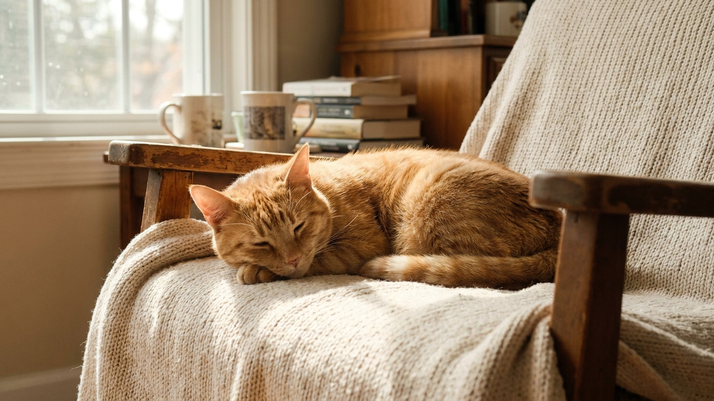

Питомец будит в 5 утра: почему это происходит и как мягко это изменить

25 июня 2026 · 3 минуты чтения · Поведение
5:47 утра. Лапа на лице. Или скулёж прямо в ухо. Питомец уверен, что пора — и не останавливается, пока вы не встанете. Это не вредность и не доминирование: за ранними побудками стоят конкретные причины, каждую из которых можно убрать. Вот как это работает и что реально помогает.
🐾 Первая помощь — всегда под рукой
AnimaLife подскажет, что делать в тревожной ситуации с питомцем ещё до визита к врачу. Откройте в один тап.
Открыть AnimaLife → Открыть в MAX →
Почему питомец будит именно утром
Утренние побудки — почти всегда одна из трёх причин или их комбинация.
- Голод и режим кормления. Самая частая причина. Если последнее кормление в 19:00, к 5 утра прошло 10 часов — питомец голоден и это совершенно логично с его точки зрения. Особенно актуально для кошек: их обмен веществ заточен под частые небольшие приёмы пищи.
- Условный рефлекс. Один раз встали и покормили — питомец запомнил. Он не издевается: просто усвоил, что этот способ работает. Чем дольше это длится, тем прочнее рефлекс.
- Накопленная энергия. Если вечером не было достаточной нагрузки, питомец просыпается заряженным. Кошки в норме активны на рассвете — это эволюционная программа охоты. Собаки, которых не выгуляли вечером как следует, торопятся на улицу.
Режим кормления: самое простое решение
Сдвиньте последнее кормление на более поздний час. Если сейчас кормите в 18–19:00, попробуйте перенести на 21:00–22:00. Сытый питомец спит дольше.
- Для кошек хорошо работают автокормушки с таймером: ставите первую порцию на 6:00–7:00 — кошка ждёт её, а не вас.
- Переносите время постепенно — по 15–20 минут в день, иначе желудок не успевает перестроиться.
- Для собак вечерняя прогулка плюс ужин в 21:00 — стандартная рабочая схема для большинства пород.
Вечерняя активность: разрядить перед сном
У кошек «охотничий цикл» запускается на рассвете и на закате — это природная программа. Если вы запустите игровую сессию вечером, кошка пройдёт весь цикл (охота — поимка — поедание — груминг — сон) и уснёт позже, а утром проснётся позже.
- 10–15 минут активной игры с удочкой или лазером за 1 час до сна — затем маленькая порция корма.
- Для собак — полноценная вечерняя прогулка с бегом или апортом, а не прогулочный круг у дома.
- Головоломки с едой перед сном (лизательный коврик, конг с начинкой) дают умственную нагрузку и замедляют питомца.
Протокол игнорирования: убрать рефлекс
Если причина — выученная привычка, её нужно «разобучить». Ключевое правило: не реагировать. Ни разу. Любая реакция — даже раздражённое «нет» или выпроваживание — подтверждает, что метод работает.
- Закройте дверь спальни — особенно актуально для кошек. Первые 3–5 дней будет шумно, потом привыкнет.
- Если дверь закрывать невозможно, притворитесь, что спите. Полное отсутствие реакции — тела, голоса, взгляда.
- Никаких наказаний: «фу», брызгалка, сгон с кровати резкими движениями — это тоже реакция. И тревога, которая делает поведение хуже.
- Срок перестройки привычки: обычно 1–2 недели последовательного игнорирования.
Главное — последовательность. Если 6 дней игнорируете, а на седьмой встали и покормили, счётчик обнуляется. Питомец усвоит, что нужно просто настаивать дольше.
🐾 Экономьте на лишних визитах к врачу
Сначала спросите AI-ветеринара в AnimaLife — часто этого достаточно, чтобы понять, нужен ли визит к врачу.
Спросить бесплатно → Спросить в MAX →
🐾 Понравился разбор?
Подпишитесь на канал — каждый день разбираем по одному тревожному симптому у кошек и собак: что в пределах нормы, а когда пора к врачу. Подпишитесь, чтобы не пропустить разбор, который может спасти здоровье вашего питомца.
Материал носит информационный характер и не заменяет очную консультацию ветеринара.
← Все статьи · Открыть AnimaLife в Telegram · RSS